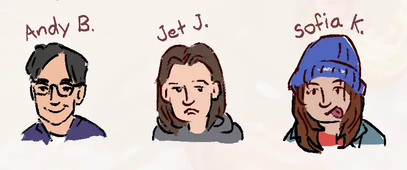
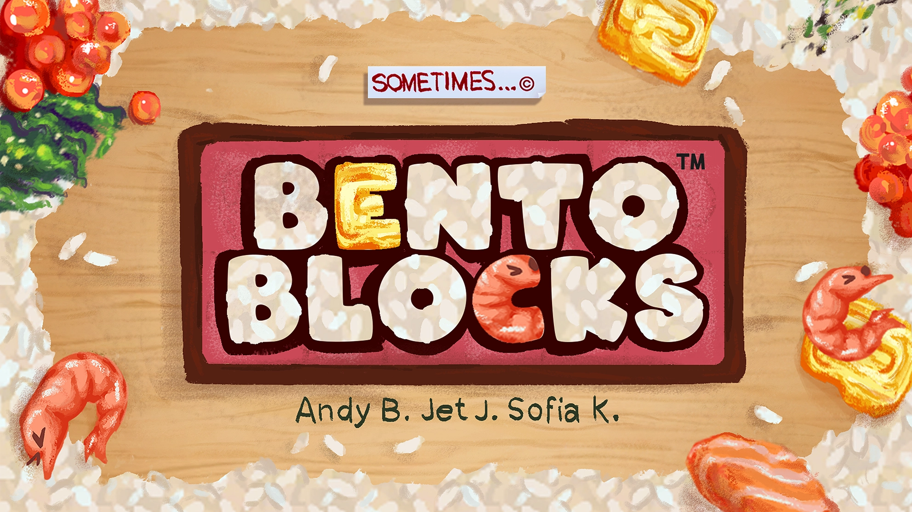
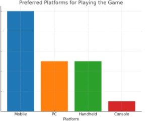

Bento Blocks is a puzzle game where the player uses knives to cut food, planning to release some time early 2025.
Development Notes
Early Prototype
Development of a prototype started in early july of 2023, initially I was thinking about a game where you cut big sheets of wood into sections to build furniture. I guess you would be trying to break down an example chair, table etc into flat pieces and then arranging them on a sheet of wood to then be cut. A larger idea was that somehow the "scrap pieces" from multiple levels could be used to solve an additional puzzle or perhaps were just to play around with in a seperate toolbox section similar to Engare.
This already seemed rather convoluted though even in the conceptual stage, and I wasn't enthuastic about working on something that required 3d. So I changed direction, keeping the wood cut element but in something that would work entirely in 2d. The new idea was closer to wood block puzzles where you have to fit all the pieces in a box which I guess is basically Tetris, but this would be more about optimizing the most efficent way to split a 2d shape to transform it into something else rather than the challenge coming from arranging the pieces.


The systems were simple enough that I just tried out every idea that came to mind, on Introle implementing things would take so long that I would often overthink if new ideas were worth the time to try. Most of these ideas weren't actually very fun to play but some like the "cookie cutters" that merged multiple knives into a single object, produced interesting consequences that I could then apply back to the core ruleset.
Pretty early on I recognized that a logical escalation of the rules could go from cutting pieces, to cutting knifes, cutting the target pieces and eventually the background or some other meta thing to end the game. I think that's ultimately what killed this initial stretch of development. Quickly jumping from first gameplay to already mapping out the scope of the game without first exploring properly, even if it had been an interesting idea. Rather than focussing on developing the interactions and seeing what consequences came about naturally it felt like I was trying to force things like cutting knives to be fun. I was more excited about finding a project that seemed doable in a few months as many projects around that time had quickly spiralled out of control, rather than about the possibilities of the gameplay space.

Back from the dead?
In april of 2024 Andy, Sofia and I were looking for a new project to work on that we could actually finish a polished version of. We each brought ideas and prototypes but the cutting game was clearly the idea that everyone could see being complete. Sofia and Andy brought the idea of a cooking theme, instead of the abstract shapes of the prototype and quickly got to work on concepting the artstyle. I started recreating the gameplay from the initial prototype in unity, With the experience and code from the prototype aswell as a lot of free time over the break, the new version of the game took less than a week to get working.


A big change that happened right before the first playtest, was removing the ability to rotate pieces and knives.
I had sort of been thinking for a while that rotation only served to make puzzles more spatially confusing.
Your already trying to balance this idea of optimizing the cuts and arranging them into a target shape, adding rotation
as a factor on top of this made puzzles artificially difficult as any piece could be in any orientation.
It made it difficult to reason about how pieces had come from the starting configuration aswell as how they could
transform into the final.
Eventually the ability for some knives to rotate was adding back in as some of the best levels that we didn't want to remove
still required one of the objects to rotate. It was obvious that this property should be added to knifes were already that
could have variations, whereas if it was on the pieces you would run into.
While it seemed like a big divergence at the time, I think in retrospect it was one of the best gameplay
decisions on the project thus far.
First playtest
Indie Game Showcase at the end of may was the first proper time we had showed the game to anyone else and proved that the foundations were solid. It was quite surprising that our random selection of levels were actually interesting to people, the majority of players stuck around to play through all the content we had available.
There was only one level people really took issue with, where the solution was to have a piece hanging off the edge of the target. I think this just needed to be introduced earlier because it was quite late in the game and every level up to that point had required the edges to be completely cut off.
The rest of the feedback was mostly about minor changes to art or ways of improving usability mainly for the piece movement. I had liked click to pickup click to drop because it allowed you to still hold on to a piece if you dropped it in a place where it couldn't land, for example on top of another piece. But this playtest clearly showed that it wasn't worth keeping as a drag an drop system would be far more intuitive especially for moving lots of little pieces quickly, which ended up being what players were doing most of the time.
Development Continues
It was expected that things would slow down after the initial burst of development to the first playtest. Commits / lines of code isn't a great metric, but from the initial peak starting in april, progress had slowed significantly. We still managed to continue a weekly session on friday but this wasn't really enough to keep momentum.
The previous system for editing levels (Unity Tilemaps) had become difficult to manage for some of the features that we wanted like editing walls between tiles. We were thinking that the game should have a built in level editor at some point after release anyway, so it wouldn't be too much of a stretch to get a basic version of that working now. The new editor allowed for much more flexibility in how tiles were edited, allowed for faster iteration and opened the possibilities for different types of gameplay. However it also contributed to the slow down in development, most level design had to stop until the new system was in place resulting in a big gap of time where the design didn't really progress.
While the gameplay didn't progress much in this time the identity of the project certainly developed through the title card, custom fonts and the loose sketchy aesthetic that was developing.
NZGDC
Showing at nzgdc was supposed to be a test of the game on a more general audience while that wasn't exactly true we still learnt alot about the types of platforms people would want the game to be on, the expected length of gameplay and how much they might pay for this type of game.
Future...
To get it to the next level of quality and refinement will require another big push of development, theres still quite a long list of gameplay and interface challenges that need to be sorted out. But now that I'm only working part time, it should allow for more time to focus on finishing the game. I think the largest challenges ahead are all the work to get the game ready for mobile, getting a proper undo system in and refining the set of levels into a complete set.